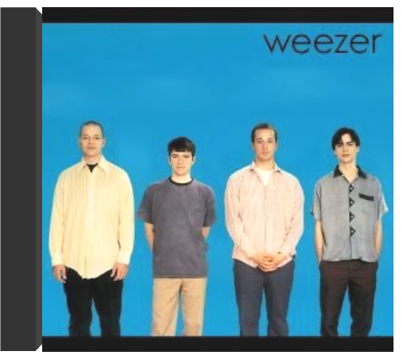

Zustand Vinyl:NM, ,Cover:NM (Goldmine Standards) - Sie bestellen:LP:Watsonian Institute,Master Funk.Versand |  weezerweezer En 1994, à sa sortie, le premier album éponyme de Weezer (dit "Blue Album") fait clairement souffler un vent de fraîcheur sur l'Amérique des college-radios et du rock indépendant, endeuillée coup sur coup par le split des Pixies et la fin abjecte de l'épopée grunge. Sorte d'équivalents américains à ce qu'a pu représenter Blur vis-à-vis de la tradition musicale anglaise, les quatre de Weezer piochent avec malice dans le riche héritage de leur nation. Il rapatrient par exemple la bonhomie mélodique des Beach Boys du début ou la pop fièrement carénée des Cars (Ric Ocasek est d'ailleurs à la production). Dans cet environnement référencé, le mordant des guitares tour à tour punk ou noisy apporte une résonance plus contemporaine. Explicitement mélodique, pourvu d'un esprit distancié qui sera parfaitement mis en image par Spike Jonze (voire le clip de "Buddy Holly" avec l'intrusion du groupe dans la série Happy Days), exsudant une morgue adolescente gentiment apprêtée, cet opus brut et homogène s'impose rapidement comme un sommet de power pop à l'américaine. —Fabrice Privé mozart : l'intégrale en 170 CDwolfgang amadeus mozart A l’occasion de l’Année Mozart, (qui ne commence bien sûr que le 1er janvier 2006, mais on n’est jamais trop à l’heure pour les grands événements !), Brilliant Classics propose son intégrale Mozart présentée en un seul coffret de 170 CD, augmentée d’un CDR d’ailleurs pas si indispensable, contenant tous les livrets en anglais pour ceux qui savent le lire. Peu importe d’ailleurs : un bon livre sur Mozart ne coûte pas très cher, mais en revanche à ce prix et même à n’importe quel prix, impossible de trouver une semblable aventure discographique et une pareille expérience. |

Julien
Collection Total:
2 016 Items
2 016 Items
Last Updated:
Dec 23, 2023
Dec 23, 2023


 Made with Delicious Library
Made with Delicious Library